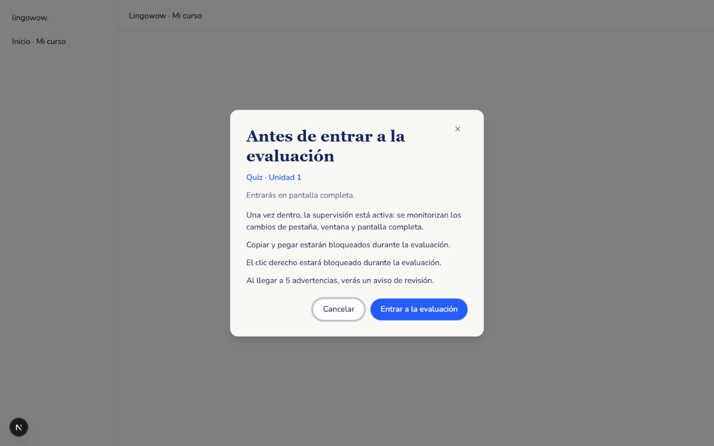
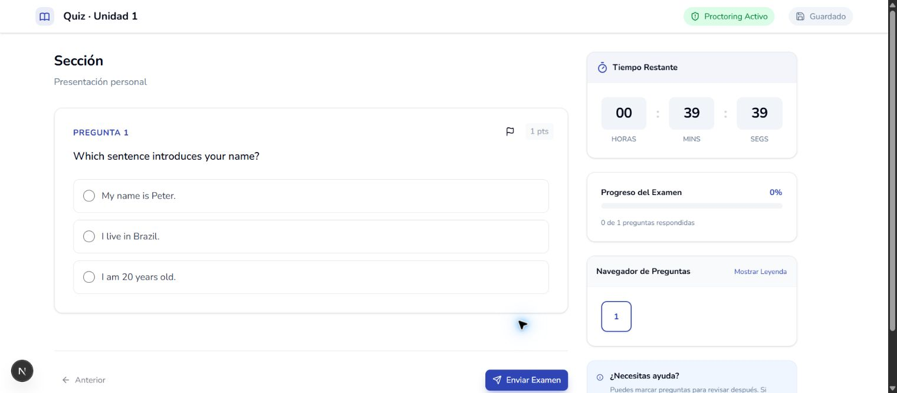
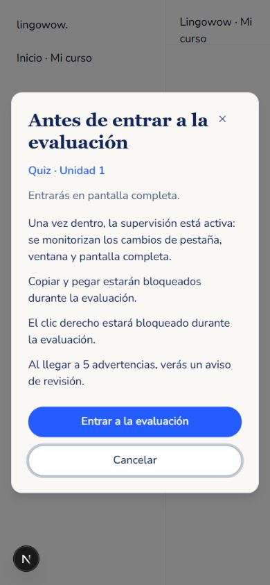
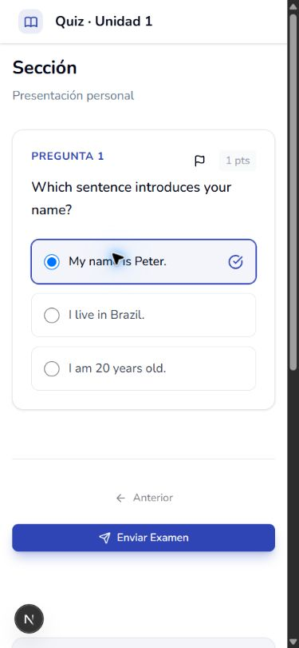

Referencia: modal previo con cancelar/entrar, pantalla completa y supervisión explicadas; después, solo interfaz del examen. Capturas reales locales; intento ficticio sin registros académicos.



